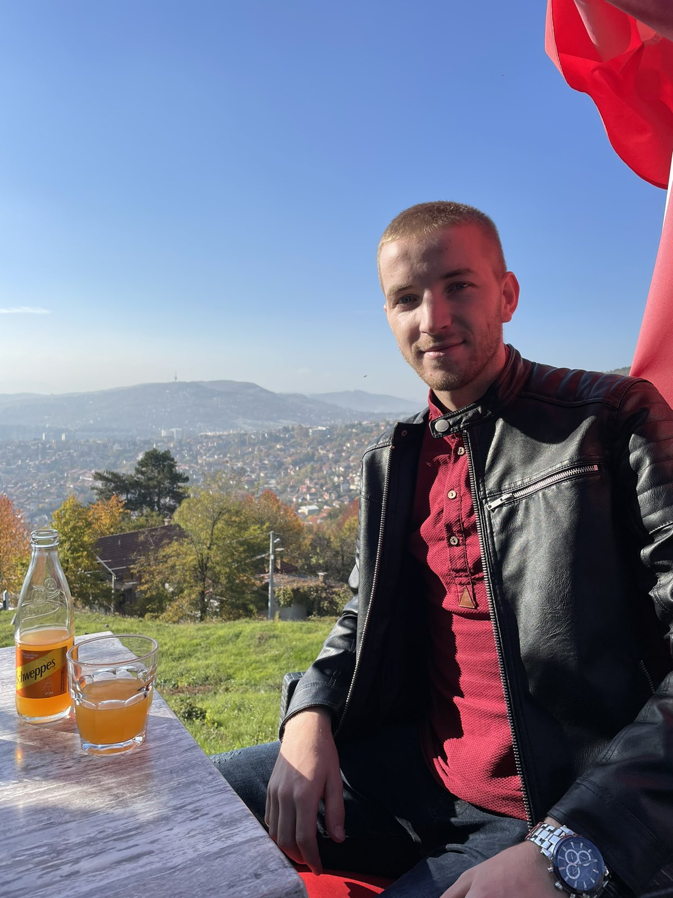
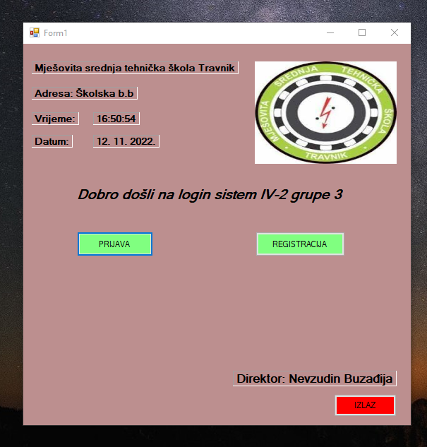
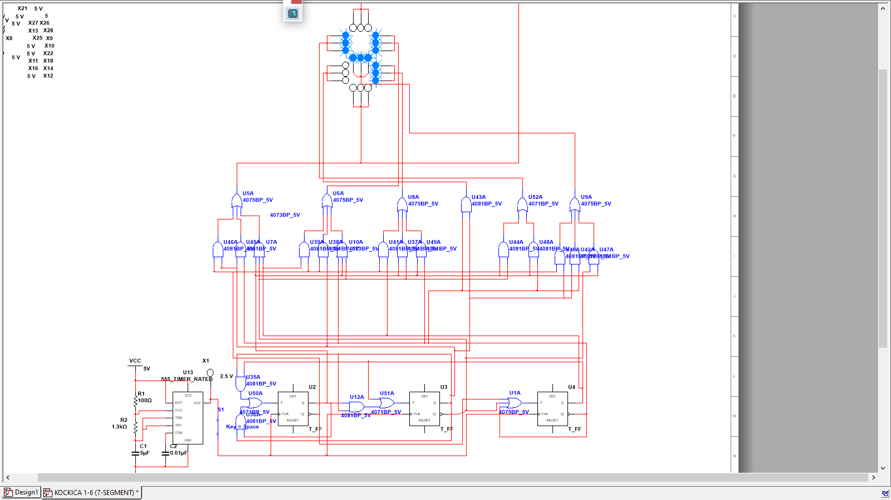

BIOGRAFIJA

O MENI |
OBRAZOVANJE
| Osnovnoškolsko obrazovanje | Srednješkolsko obrazovanje | Univerzitetsko obrazovanje | |
|---|---|---|---|
| Naziv ustanove: | OŠ "Vitez" u Vitezu | MSTŠ Travnik | Prirodno-matematički fakultet |
| Godina upisa: | 2008 | 2016 | 2022 |
| Godina završavanja | 2016 | 2020 | ---- |
| Stepen obrazovanja: | II | IV | -- |
| Adresa: | Josipa Kurevije b.b Vitez, BiH | Školska bb 72270, Travnik BiH | Zmaja od Bosne 33-35, 71000 Sarajevo BiH |
Strukturalno obrazovanje
| Osnovnoškolsko obrazovanje | |
|---|---|
| Naziv ustanove: | OŠ "Vitez" u Vitezu |
| Godina upisa: | 2008 |
| Godina završavanja | 2016 |
| Stepen obrazovanja: | II |
| Adresa: | Josipa Kurevije b.b Vitez, BiH |
| Srednješkolsko obrazovanje | |
| Naziv ustanove: | MSTŠ Travnik |
| Godina upisa: | 2016 |
| Godina završavanja | 2020 |
| Stepen obrazovanja: | IV |
| Adresa: | Školska bb 72270, Travnik BiH |
| Univerzitetsko obrazovanje | |
| Naziv ustanove: | Prirodno-matematički fakultet |
| Godina upisa: | 2022 |
| Godina završavanja | ---- |
| Stepen obrazovanja: | -- |
| Adresa: | Zmaja od Bosne 33-35, 71000 Sarajevo BiH |
-
HTML
-
CSS
-
C#
-
Python
-
C++
Tehničke vještine
- Komunikativan
- Timski duh
- Kreativan
- Snalažljiv
- Samouvjeren
Društvene vještine
MATURSKI RAD
TEMA: Informacioni sistem za regulaciju dežurstva
Moderna tehnologija je jednostavno postala dio našeg života. Osmišljena je da ljudima olakša život i pomogne u mnogim stvarima, kao npr. školovanju. Škole postaju modernije, opremljene računalima, projektorima, sada su popularni i e - dnevnici, a sve to ima svrhu da učenicima bude lakše, možda i da ih potakne da više uče. Tema mog maturskog rada je veoma slična e – dnevniku, informacioni sistem za regulaciju dežurstva, čime bi olakšao školski sistem što se tiče dežurstva te problema s kojim se mnoge škole susreću u vezi dežurstva.
Izgled forme „Dezurstvo“
Maturski rad je bio iz predmeta Programiranje i programski jezici. Mentor za rad je bio profesor Mevludin Arnautović, koji trenutno radi kao Senior Software Developer u Zira-i. Moj mentor je bio osoba koja me uputila šta nastaviti studirati i gdje. Ništa ne bi bilo da ja nisam pohađao Mješovitu srednju tehničku školu "Travnik" u Travnik, koju preporučujem svakom budućem srednjoškolcu. Šta ova škola nudi pogledajte na web stranici MSTŠ Travnik ili posjetite školu na lokaciji: Školska bb 72270, Travnik BiH. Ukoliko želite pogledati cijeli rad možete preuzeti dokumentaciju: Maturski rad - Belmin Muratović
Projekti
| LOGIN SISTEM | |
|---|---|
|  | |
|
Desktop aplikacija za prijavu i registraciju korisnika na neki sistem. Projekat se sastoji od:
Ovu aplikaciju možete pogledati na link-u. Ukoliko budete imali problema, kontaktirajte me na mail: belci911mu@gmail.com. |
|
| KOCKICA 1-6 (7-SEGMENTNA) | |
|---|---|
|  | |
|
Projekcija ispisa brojeva od 1 do 6 na sedmo segmentnom displeju led lampi. Projekat iz impulsne i digitalne tehnike gdje se na sedmo segmentnom displeju prikazuju brojevi od 1 do 6. Projekat je realiziran pomoću:
|
|
Kontakt
- Grbavica b.b Vitez
- belci911mu@gmail.com
- 060-34-11-342
Potraži me!